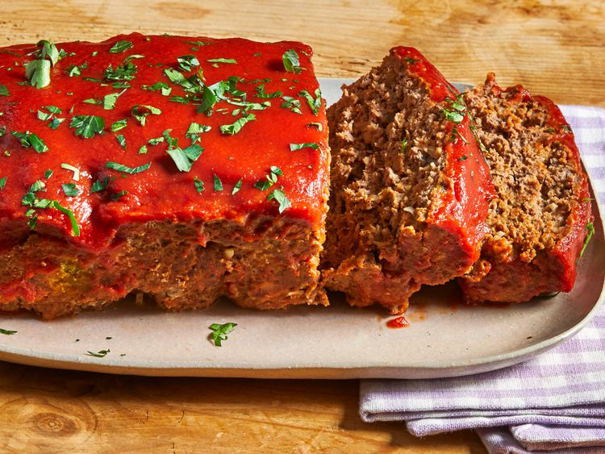

Lasanga

Description
a dish of ground meat,
often mixed with other ingredients, as breadcrumbs and seasonings, molded in the shape of a loaf and baked.
Ingredients
- Butter
- Onion
- Garlic
- Seasonings
- Beef
- Toasted breadcrumbs
- Worcestershire
- Tomato sauce
- Eggs
Steps
- Preheat to 375
- Soften the aromatics
- Combine ingredients
- Place into baking pan
- Bake for 40 min
- pour sauce over top
- Bake 10 min